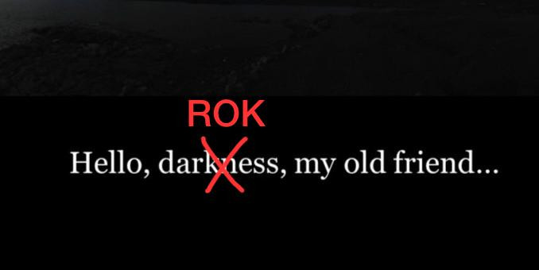

vrhunski odradeno
Sicsile nice save there
 ne znam u cemu sam bolja, sisu ili izradi memova lol
Kad ce se znati koliko smo bodova dobili tj otrgnuli bolje reci….?
sta ste ocekivali proc kontinuirano? ovo je bio turisticki izlazak na online ispit heh
Yelena Da vas malo utješim, čuo sam da su rokovi teža šablona. Samo da budu uživo pa da ne izmišljaju nešto novo za online.
“Ako je x = 2 onda znamo da je x = 2”
Kaneki kun bok Marko
Kaneki kun ja bi izbrisao post prije nego asistenti lurkeri vide i prijave
jel još nekom prevelik pdf file za postupke pa ne prolazi na moodle-u?
username kakvi postupci
username Svaka čast, ja se razmišljam dal da uopće predam nešto.
Sad ozbiljno, prebaci iz png-ova u jpg-ove ako je preveliko.
username Kako si napravio pdf od slika? Nikad to nisam radio, pa me zanima kako to najlakše?
username mozes samo resizat jednostavno npr. ovdje http://www.simpleimageresizer.com/ par slika taman da bude ispod 10
jel zna netko jel ona sirina frekvencijskog pojasa spektra bila doslovno jednaka povrsini signala(pravokutnika) il sam ja zabrio
FICHEKK stavis slike u word i iz worda u pdf
FICHEKK https://smallpdf.com/merge-pdf
pa šta ne treba poslati postupke do 19h na moodle? Tako piše u obavijesti onoj o ispitu
ja sam išao na “pictures to pdf” na google, tako mi najlakše
Bobinator Prvih 8. Kasno sam skužio da donose pišljive bodove. Tugy plaky.